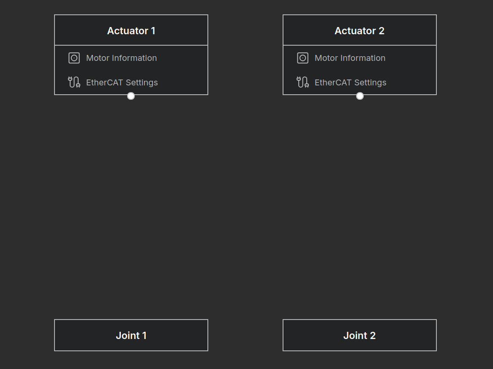
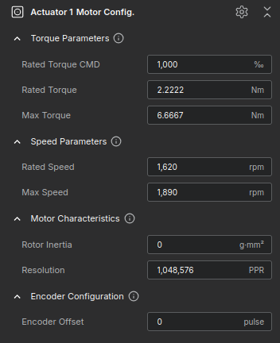
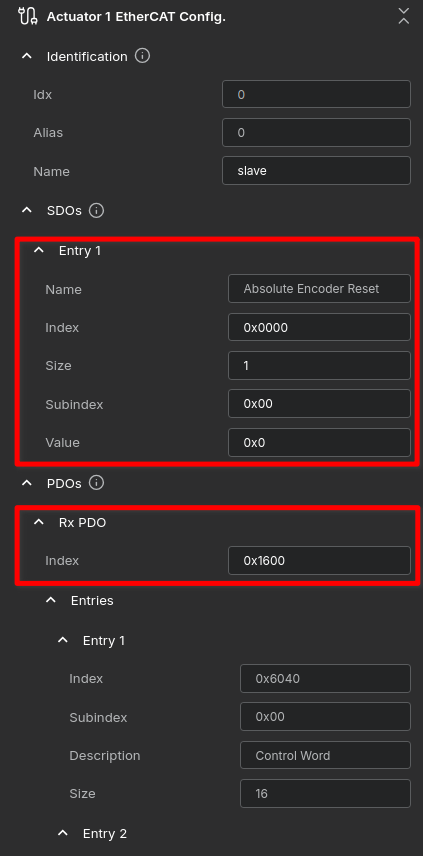
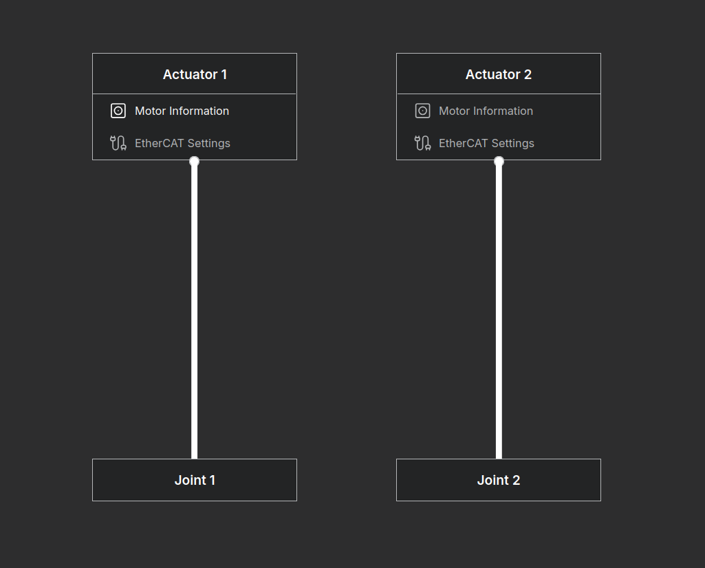

Building a Simple 2-Bar Robot - Actuator Mapping
Setting up Actuators (Example: Synapticon JD Series)
In the previous section, we completed the modeling of the robot's kinematics and dynamics. Now, we must map this theoretical model to the physical hardware: the Actuators.
This tutorial guides you through mapping your theoretical robot model to physical Synapticon JD8/JD10 actuators. Follow these steps to get your robot running quickly. The goal is to mount a JD10 on Joint 1 and a JD8 on Joint 2.
Step 1: Verify Actuator Nodes
Upon entering the Actuator Mapping page, verify that the actuator and joint nodes have been automatically generated based on your previous robot structure configuration. Status: Ensure nodes are visible (currently in an Unlinked state).
Troubleshooting: Node Count Mismatch
- If the number of Actuators and Joints does not appear as expected (2 pairs for this tutorial), please return to the Robot Structure tab.
- Check Joint Type: Verify that the Joint Type is set to Rotation Z. If set to None, it is not counted as a valid Degree of Freedom (DoF) and will not generate a mapping node.
{kind=link}

Step 2: Input Motor Specifications
- Click the [Motor Information] button on the actuator node.
- Refer to the specifications below and enter the data into the right panel.
Actuator 1 (Joint 1): Synapticon JD10
| Parameter | Specification |
|---|---|
| Product Name | ACTILINK-JD Circulo 10 |
| Rated Torque | 2.2222 Nm |
| Peak Torque | 6.6667 Nm |
| Rated Output Power | 380 W |
| No-Load Speed | 1,890 rpm |
| Rated Load Speed | 1,620 rpm |
Actuator 2 (Joint 2): Synapticon JD8
| Parameter | Specification |
|---|---|
| Product Name | ACTILINK-JD Circulo 8 |
| Rated Torque | 0.774 Nm |
| Peak Torque | 2.194 Nm |
| Rated Output Power | 170 W |
| No-Load Speed | 3,100 rpm |
| Rated Load Speed | 2,131 rpm |
Ignore the Gear Ratio field in this step. it will be handled in the Transmission setup (Step 4).
{kind=link}

Step 3: Configure EtherCAT Communication
Click [EtherCAT Settings] to configure the driver communication.
- SDO Settings: For Synapticon drives, skip the SDO Entry 1.
- Note: These drives use a transactional safety model. Perform the Absolute Encoder Reset using the manufacturer's dedicated software instead.
- PDO Settings: Set the indices for User-Defined Mapping.
- RxPDO (Master to Driver): Set mapping index to 0x1600. Ensure it maps
Control Word,Target Position, etc. - TxPDO (Driver to Master): Set mapping index to 0x1A00. Ensure it maps
Status Word,Actual Position, etc.
- RxPDO (Master to Driver): Set mapping index to 0x1600. Ensure it maps
{kind=link}

Step 4: Configure Transmission (Actuator-Joint Mapping)
Finally, we connect the actuators to the joints. For this 2-Bar robot, we use a simple 1:1 Mapping strategy where each motor drives exactly one joint.
Procedure:
- Switch the view to Diagram Mode.
- Click Add Edge to draw connection lines.
- Connect Actuator 1 to Joint 1.
- Connect Actuator 2 to Joint 2.
{kind=link}

Setting the Transmission Values: You must input the reduction ratio (inverse of gear ratio) for each connection.
Do not enter fractions (e.g., 1/9). You must calculate and enter the decimal value.
Connection 1 (JD10 → Joint 1):
- The JD10 has a gear ratio of 9 : 1.
- Calculation:
1.0 / 9.0 ≈ 0.111111 - Input Value:
0.111111
Connection 2 (JD8 → Joint 2):
- The JD8 has a gear ratio of 7.75 : 1.
- Calculation:
1.0 / 7.75 ≈ 0.129032 - Input Value:
0.129032
Direction Tip: If a joint rotates in the opposite direction of the command during testing, simply change this value to a negative number (e.g., -0.111111).
Proceed to Virtual Verification to verify the robot's movement through simulation.